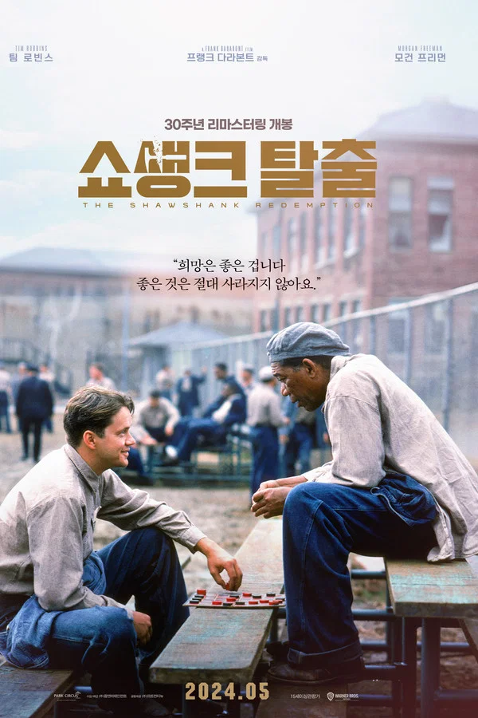

촉망받는 은행 간부 앤디 듀프레인은 아내와 그녀의 정부를 살해했다는 누명을 쓴다.
주변의 증언과 살해 현장의 그럴듯한 증거들로 그는 종신형을 선고받고 악질범들만 수용한다는 지옥같은 교도소 쇼생크로 향한다.
인간 말종 쓰레기들만 모인 그곳에서 그는 이루 말할 수 없는 억압과 짐승보다 못한 취급을 당한다.
그러던 어느 날, 간수의 세금을 면제받게 해 준 덕분에 그는 일약 교도소의 비공식 회계사로 일하게 된다.
그 와중에 교도소 소장은 죄수들을 이리저리 부리면서 검은 돈을 긁어 모으고 앤디는 이 돈을 세탁하여 불려주면서 그의 돈을 관리하는데...

주인공. 겉보기엔 금욕적이고 냉정한 인물인 듯하지만, 실제로는 내성적이고 차분하며 다소 유약하고 부드러운 면도 있는 성격.
본래 유능하면서도 출세가도를 달리던 은행원이었으나, 아내와 불륜 상대인 골프 선수를 살해했다는 누명을 뒤집어쓰고 무기징역을 선고받게 된다.
앤디는 이 일을 두고두고 후회했는지 영화 후반에 토미에게 모든 진실을 들은 이후론 자신은 아내를 사랑했으나 제대로 표현하지 못해서 자기가 아내를 죽게 만들었다며 자책하지만, 레드는 앤디가 좋은 남편이 아니지만 살인범도 아니라고 달래준다.
레드(Red)라는 별명으로 더 자주 불리는 이 영화의 화자이자 진 주인공.
앤디와 가장 먼저 친해진 죄수로, 1920년대 말에 강도 살인을 한 죄로 무기징역 선고를 받아 수감 중이다.
복역 20년 차부터 가석방 심사도 받았지만 부적합 판정을 받아 번번이 나가지 못한다.
감옥에서 죄수들이 필요한 것을 부탁하면 어지간한 건 대부분 구해다 주는 일종의 밀수업을 하고 있다.
교도소로 외부 세탁물 등을 가져오는 업자에게 뇌물을 찔러주고 대신 구입할 물품 리스트를 전달해 대리 구매하는 방식을 쓰는 듯하다.
밀수업을 하는 죄수들이 더 있다는데, 평판은 레드가 가장 뛰어난 걸로 보인다. 작중에선 앤디가 레드의 가석방 반려를 위로하기 위해 다른 밀수업자에게서 하모니카를 구해주기도 했다.
교도관들에게도 뇌물을 지속적으로 찔러줘 그럭저럭 편하게 지냈던 모양으로, 지붕 수리 작업 때도 1인당 담배 한 갑씩 찔러주는 것으로 자신을 포함해 친분 있는 사람들이 뽑히도록 손을 썼다.